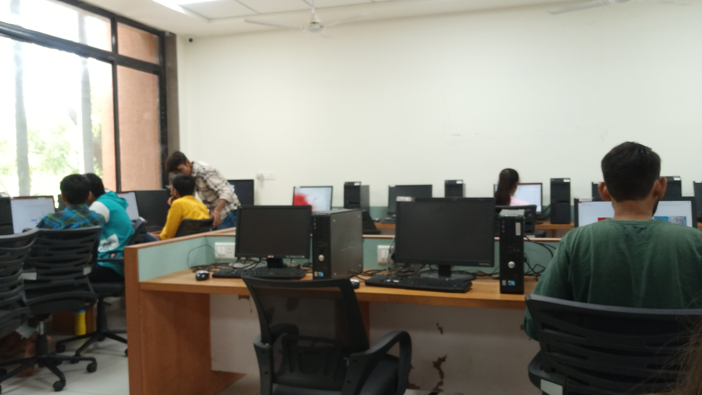

Department of Computer Science, Gujarat University is the most popular, well sought and best resourced Computer Science Department in Gujarat. Ever since its inception, Department of Computer Science has maintained and sustained its legacy as a premium institute in providing high quality education to produce personnel with professional and personal success as well as high ethics and social conduct. The resources at the department are well supported by extensive networked Computer facilities and software aids well along with skilled and experienced faculties.